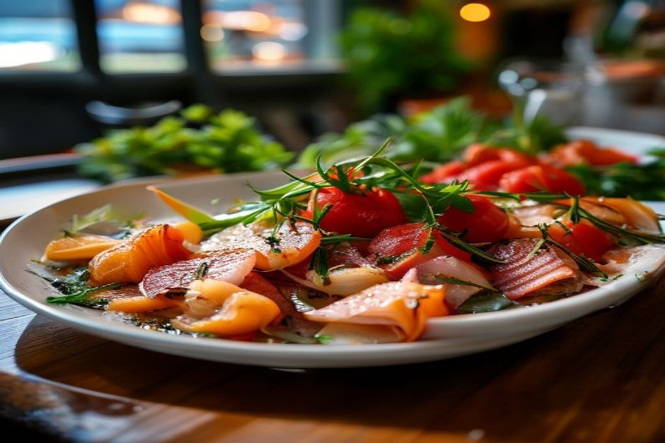
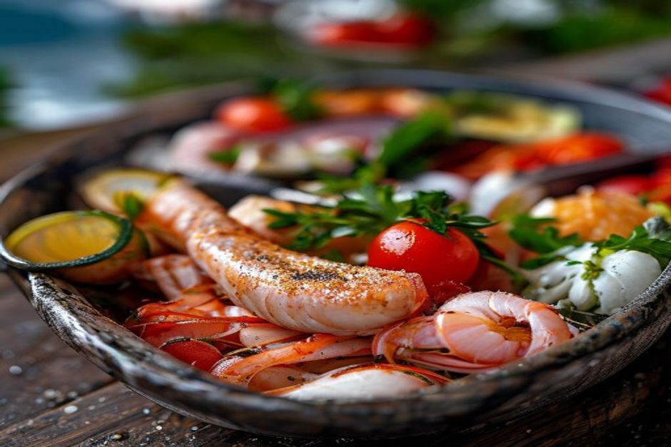

Madeira's best restaurants aren't the ones with the biggest menus — they're the ones closest to the boats. Here's what the island's fishing fleets actually bring in, how it ends up on a plate, and where to find it fresh.
What seafood is Madeira actually known for?
Four things dominate: lapas (grilled limpets), espada (black scabbardfish, usually fried with banana), atum (seared or grilled tuna steak) and polvo (octopus, grilled or in a stew). All four come from Madeira's unusually deep, steep-sided coastal waters — the island's continental shelf drops off fast, which is exactly why species that live at very different depths all show up within a short boat ride of Funchal.

What are lapas, and how should you order them?
Lapas are limpets, prised by hand off wave-washed volcanic rocks and served grilled on the half-shell with garlic, butter, lemon and fresh coriander — a classic petisco (small plate) to start a meal. They're simple, briny and best eaten with bread to mop up the garlic butter. Because wild lapas populations are limited, they're subject to minimum size rules, so a restaurant serving noticeably small lapas is one to avoid — both for taste and for the reef.
What's the story with espada, and how is it different from tuna?
Espada is a black, ribbon-shaped deep-sea fish hauled up from 800 to 1,200 metres off Câmara de Lobos, using a traditional long-line method that's been fished the same way for generations. It has a mild, delicate flesh and is almost always served fried, classically with banana and a squeeze of passion fruit. Atum (tuna), by contrast, is a warm-season migratory fish caught much closer to the surface with pole-and-line gear, and lands on the plate as a thick grilled steak — usually pan-seared with garlic, bay leaf and a splash of Madeira wine vinegar. If a menu lists both, they're not interchangeable: order espada for something you won't find anywhere else, and atum when you want a familiar, meaty fish done properly.
When is the best time to eat fresh local tuna?
Madeira's small pole-and-line tuna fleet operates seasonally, typically from March or April through to September or October, following bigeye and skipjack tuna as they migrate past the archipelago. Outside that window, restaurants either serve frozen tuna or switch the daily catch to something else — so if fresh atum matters to you, a summer visit is the safer bet.
What other seafood is worth trying?
Beyond the big four, look for polvo à lagareiro (octopus roasted with olive oil and potatoes), gambas or camarão (prawns) grilled simply with garlic, and, on the more expensive end, lagosta (spiny lobster) and percebes (goose barnacles) harvested by hand from wave-battered rocks — a genuine delicacy, priced accordingly. A mixed marisco (shellfish) platter is the easiest way to try several things at once without committing to a full plate of any one.
Where can you find the freshest seafood in Funchal?
Start at the Mercado dos Lavradores, where the ground-floor fish hall runs a lively auction most mornings and gives you a real sense of what actually came in that day. From there, the reliable pattern holds across the island: the closer a restaurant sits to a working harbour, the fresher the fish. Câmara de Lobos, still a working fishing village a short drive from Funchal, and the Zona Velha's smaller tascas near the old town both tend to serve what was landed that morning rather than what's been sitting in a freezer.
What wine goes with Madeira's seafood?
A dry Sercial or off-dry Verdelho Madeira wine — both light, high-acid fortified styles — cuts through grilled and fried fish well, though most seafood restaurants will also pour a crisp Portuguese vinho verde or a mainland white alongside their local wine list. Either way, skip the sweeter Bual and Malmsey styles for the main course; save those for dessert.
Is seafood in Madeira good value?
Everyday dishes — espada, grilled fish of the day, a lapas starter — are reasonably priced at local tascas and don't require a special-occasion budget. Lobster, percebes and tasting menus at the island's higher-end restaurants cost noticeably more, which is fair given how labour-intensive they are to harvest. As a rule, whatever the boats brought in that morning is both the freshest thing on the menu and usually the best value.

The easiest way to understand where all of this comes from is to see it firsthand. A private boat trip with Chifbay runs past Câmara de Lobos' working harbour and the deep waters off Cabo Girão where espada is still fished the old way — then brings you back to Funchal in time for dinner, with a proper appetite and a much better idea of what's actually on your plate.